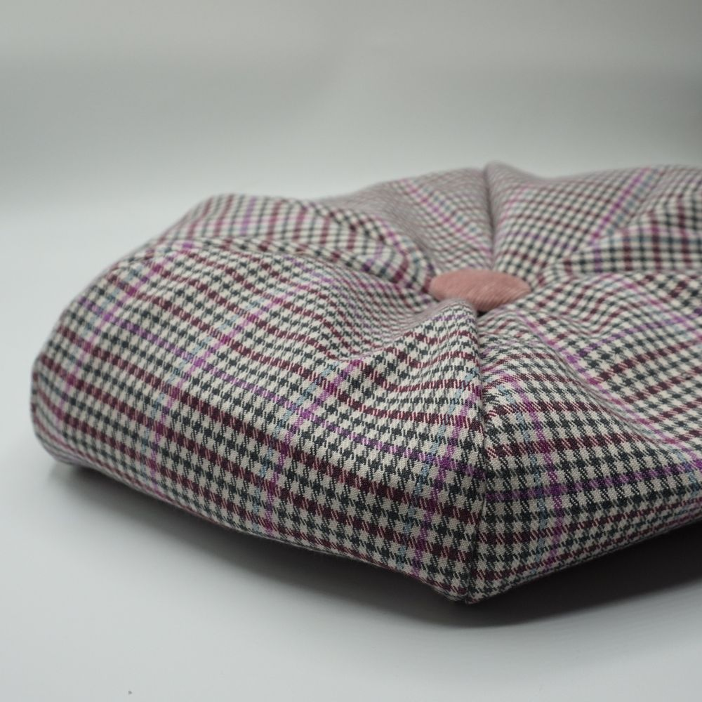
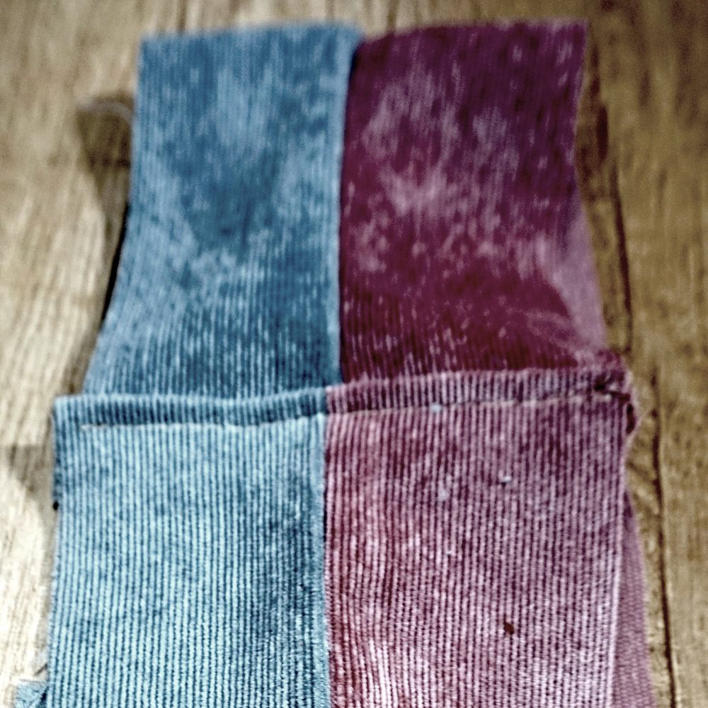
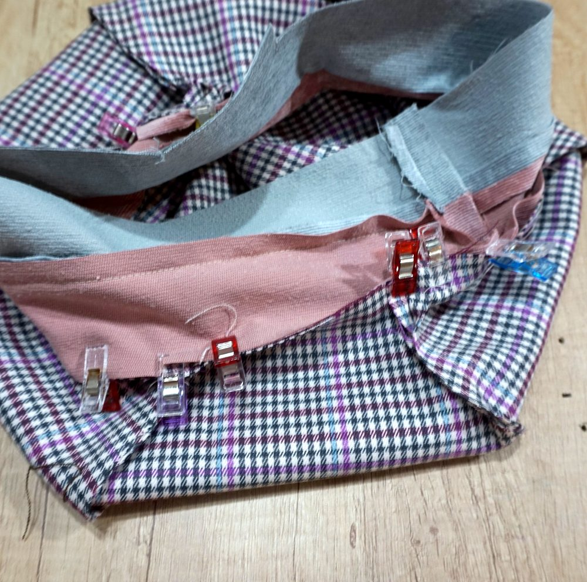
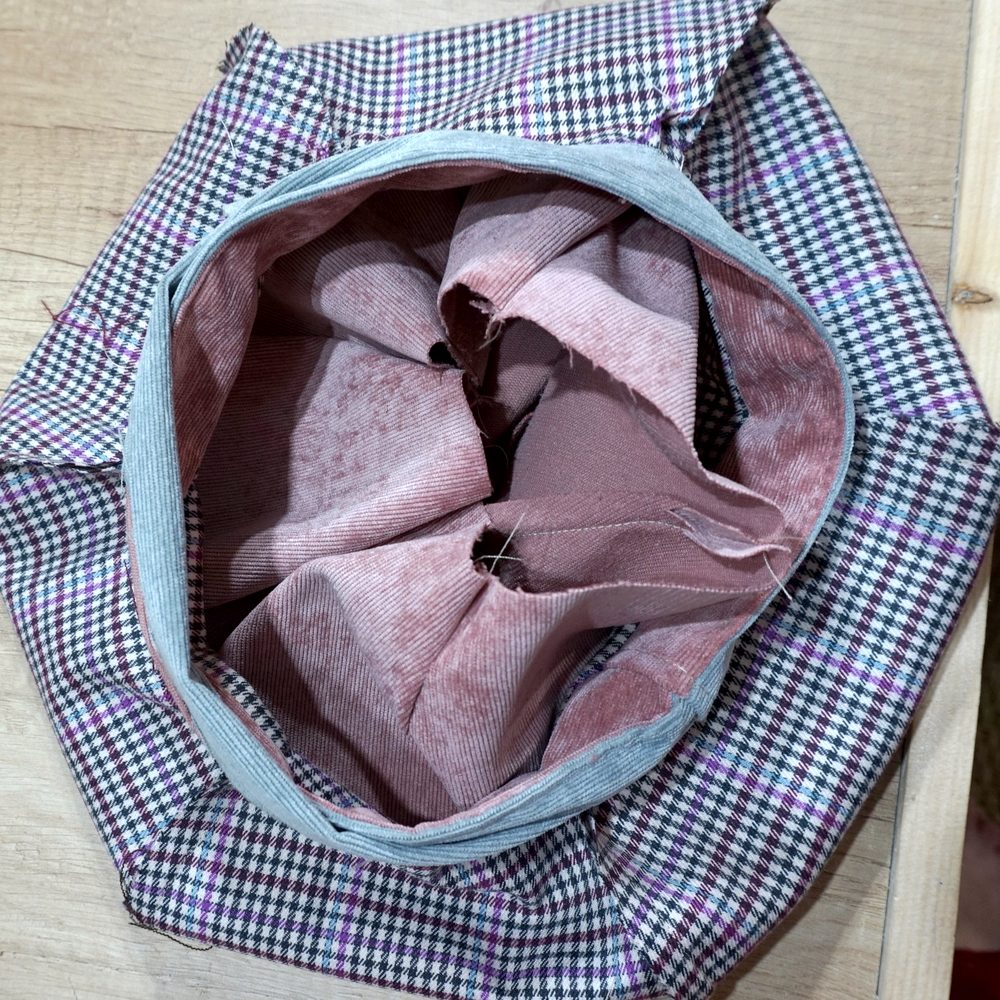
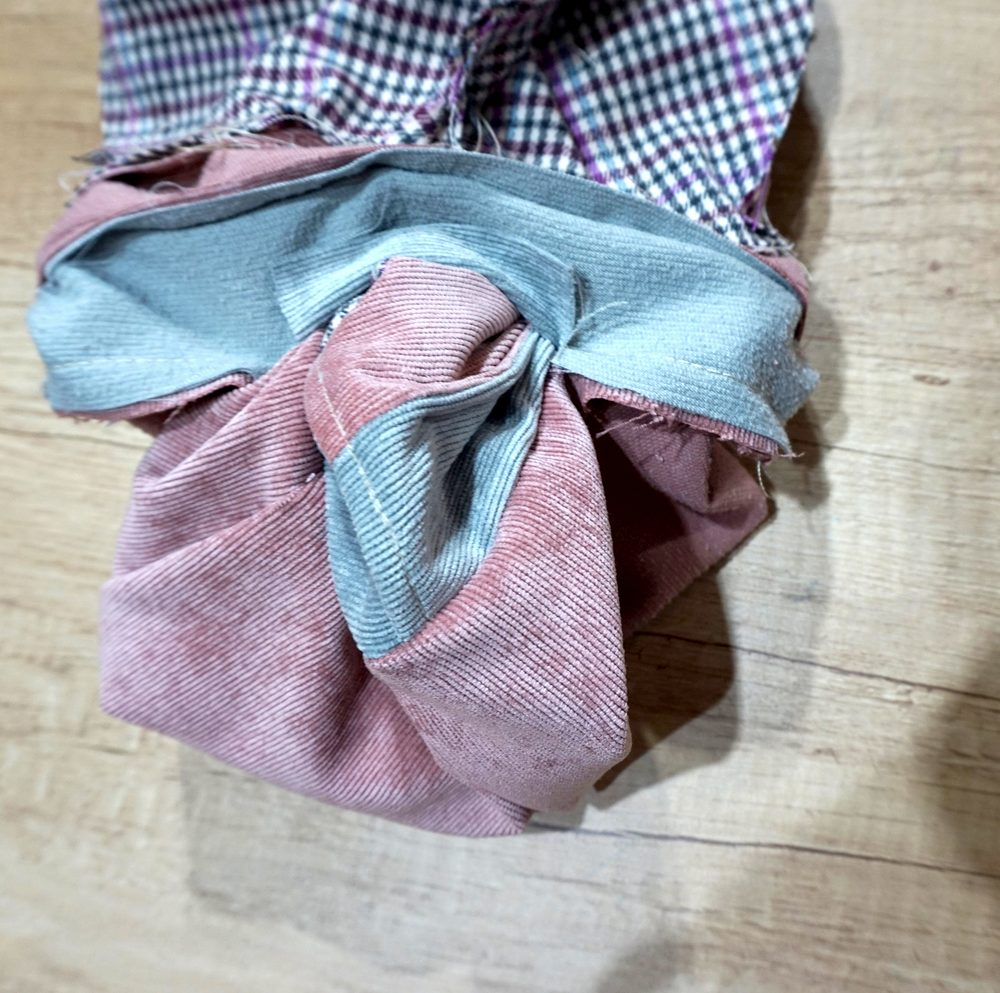
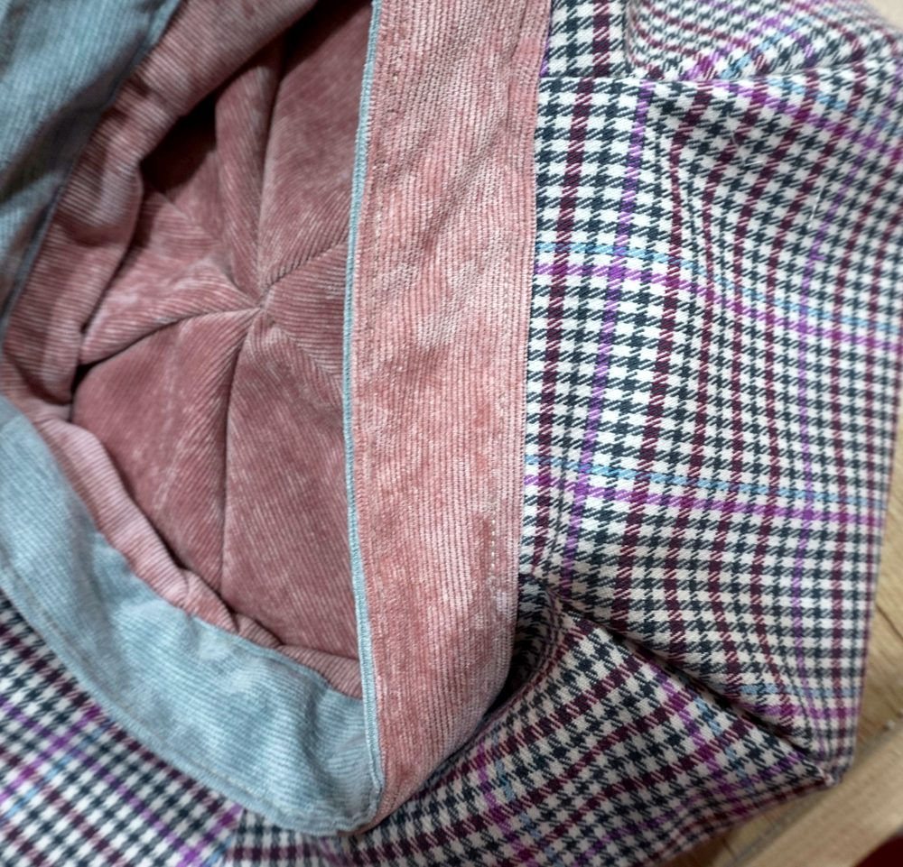
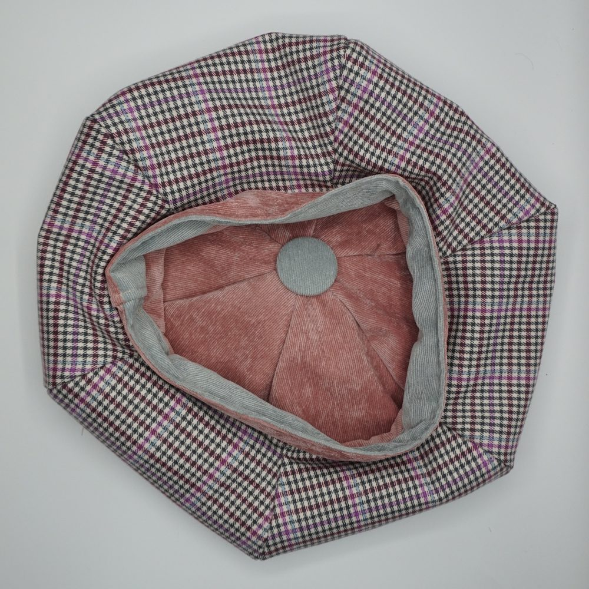

Beret guide
A beret is a soft, round cap with a flat crown and no visor. It is made of fabric (not felt), reversible, with a headband, six or eight petals, with or without piping and a button on top (two if it is reversible). This guide updates my video, in English with French subtitles.


General considerations
Beret shape and petal measurements
The shape of the petal, and therefore of the beret, comes from the following measurements:
- the head circumference and its ease
- the headband height
- the chosen beret diameter (measured on the flat top)
- the edge thickness (the carre, or ridge): from 1 to 3 cm, it determines whether the edge of the beret is flat or rounded
- the number of petals (6 or 8).

Once these are entered, the tool calculates the shape of the petal. Six petals suit a classic beret; for a very full (XXL) beret, choose eight petals. The schematic preview shows your measurements graphically, “live”, so you can make an informed choice.

Choosing fabrics
You need a fluid fabric, with a certain thickness or weight. Thickness and weight can be corrected with interfacing. A little spandex is fine, not too much. The secondary fabric can be a (light) lining fabric or, for a reversible beret, a medium-weight fabric.
Reversible?
Choosing a reversible beret adds nothing to the pattern or to the difficulty of making it. The only difference: attaching a light lining to the main fabric, rather than attaching a medium-weight fabric to it, and the need for a second button.
Please note
- With a medium-weight fabric (reversible beret), ease is not only needed for comfort: it must also allow for the seams “taking up room”. On top of the comfort ease, I advise adding 0.5 to 1 cm.
- Although a beret looks simple to make, it must be made with great care. An error of 1 mm on the seam on each side of the petal can add up to an error of 12 mm on the head circumference (16 mm for the XXL beret).
- The tips of the petals can be a challenge for beginners: hence the importance of the button on top which, besides looking good, can help hide a slight imperfection.
Sewing and assembly guide
Preparing the petals
Fuse a light interfacing on both fabrics. Marking is easy, and so is cutting, with a rotary cutter, three petals at a time. If the fabric has a pattern (a tartan, for example), cut the petals from a single length of fabric: the patterns match, which is worth checking before sewing.
Piping
It is optional: the headband can be made without it. However, it gives the beret a certain charm. There are plenty of tutorials on making and sewing piping, and plenty of ready-made piping is available to buy. I prefer to make my own, for a better match with my fabrics. Adding piping does not fundamentally change how the beret is sewn and assembled.
Sewing the petals
Sew the petals together, for each of the two fabrics (main and secondary), and press to flatten the seams.

Making the headband
- Place the two strips right sides together and sew them along one long side only, the side opposite the 7 cm fold-under allowance. If you are using piping, this is where to add it to the headband. Leave the other side open, turn the strips right side out (the seam becomes the bottom fold of the headband) and press this fold flat.
- At the end to be folded, trim the seam allowance over 4 cm to make folding easier.
- Fold the end over by 2 cm along its fold line (blue dashed line), press the fold and sew it down.

The headband: side seam and folded end - Close the headband into a ring: lay the end opposite the fold over the folded end, matching the notches (joining marks), then sew close to the fold, along the solid marker line.

The headband ends joined - Topstitch the headband along its whole length.
Joining the petals and headband
Join the main fabric part to the matching side of the headband, right sides together. Clip the seam allowance of the headband (main fabric side) all the way round, only where the headband meets a seam, to make it easier to join to the petals (without going past the seam line), then sew.

Place the two parts of the beret one inside the other, right sides together. Sew all the way round, keeping the 7 cm fold-under allowance open: it will be used to turn the beret right side out.

Turning and closing
Turn the beret through the opening: it is never easy when the opening is small, but it is better that way.

Fold the fold-under allowances of the opening in towards the inside of the headband.
Sew a finishing seam along the top of the headband: it holds together the two sides of the headband and the lining or secondary fabric, and it also catches the fold-under allowances of the opening, which closes it.

With a few discreet stitches by hand, in the seams on top, fix the lining to the inside of the beret.
The finishing button
For a perfect finish, add a button where the petal tips meet. A fabric-covered button works very well: cover it with the main fabric, or with another fabric for contrast. One button on each side for a reversible beret.
The finished beret


